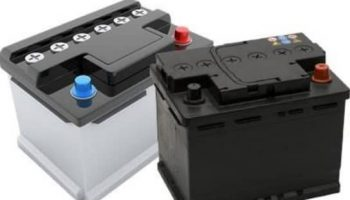

نکاتی در رابطه با باتری ماشین
باتری ماشین یکی از قسمت های بسیار مهم و حیاتی ماشین میباشد که بدون وجود آن بسیاری از عملکرد های خودرو دچار مشکل میشود. ما در این مطلب قصد داریم که برای شما بیشتر در رابطه با نکات باتری ماشین صحبت کنیم و به شما بگوییم که نقش باطری خودرو در ماشین چیست و این باتری چگونه میتواند به عملکرد خودرو کمک کند. توجه نمایید که به طور کلی باتری نقش ذخیرهسازی انرژی را دارد که این ذخیرهسازی انرژی به شما کمک میکند هنگام خاموش بودن ماشین از نیروی برقی که در باتری وجود دارد استفاده کنید. همچنین باتری نکاتی در رابطه با باتری ماشین به ماشین کمک میکند تا هنگام شروع به حرکت انرژی مورد نیاز برای استارت ماشین را تامین کنید. به هر حال باتری ماشین از بخش های بسیار مهم آن میباشد که بدون وجود آن بسیاری از عملکرد ها در سیستم ماشین دچار مشکل میشوند.شاید در گذشته استفاده از باتری مرسوم نبوده و باطری ها اصلا تاثیر خاصی در سیستم عملکرد ماشین ها نداشتند، اما امروزه با توجه به اضافه شدن انواع مختلف سیستم های گوناگون روی ماشین ها، استفاده از باطری ماشین به یک ضرورت تبدیل شده زیرا بدون وجود آن هیچ کدام از آپشن های موجود در خودرو عمل نخواهند کرد و در واقع ماشین شما به یک ماشین بیمصرف تبدیل خواهد شد. به هر حال اگر شما نیز کنجکاو هستید تا بیشتر در رابطه با باتری ماشین اطلاعات کسب کنید، به شما پیشنهاد میکنیم که این مطلب را تا انتها بخوانید و با ما همراه بمانید تا اطلاعات شما در این زمینه را بالاتر ببریم
نحوه عملکرد باتری ماشین چگونه میباشد؟
بیشتر ما برای شما در رابطه با اهمیت باتری ماشین صحبت کردیم و به شما گفتیم که باتری خودرو وظیفه تامین نیاز برقی ماشین را برعهده دارد. اما شاید برای شما سوال پیش آمده باشد که باتری ماشین چگونه سیستم برق و انرژی برق مورد نیاز ماشین را راهاندازی می کند و به شما کمک می کند تا از انواع مختلف آپشن های موجود در ماشین حتی هنگامی که ماشین خاموش است بهره ببرید. توجه نمایید که باتری ماشین هنگامی که ماشین در حال حرکت می باشد شارژ می شود و دینام هنگام کارکردن ماشین با چرخیدن لاستیک های ماشین انرژی برق تولید میکنند و این انرژی برق در باتری ماشین ذخیره می شود. این انرژی ذخیره شده در باتری ماشین هنگام استارت زدن میتواند انرژی مورد نیاز را تامین کند به همین دلیل ماشین هایی که دچار خرابی باتری هستند با مشکل استارت زدن مواجه هستند. به طور کلی بدون وجود باتری ماشین، استفاده از بسیاری از آپشن های ماشین دچار مشکل میشود و شما حتی ممکن است نتوانید از ماشین استفاده کنید. اگر باتری ماشین شما دچار مشکل باشد سیستم برق ماشین شما به طور کامل از بین خواهد رفت و در کنار از بین رفتن سیستم برق شما با خرابی چراغ ها، استارک، بوق، بالا و پایین کردن شیشه ها و مورد دیگری روبرو خواهید شد.
اجزای باتری ماشین کدام ها هستند؟
حال که برای شما کمی در رابطه با ویژگی های باتری ماشین و نحوه عملکرد آن صحبت کردیم بهتر است که برای شما در رابطه با اجزای تشکیل دهنده باتری خودرو صحبت کنیم تا بتوانیم شما را بیشتر با این موارد آشنا کنیم. توجه نمایید که به طور کلی باتری ماشین شامل پوسته، نشانگر، درب، قطب مثبت، قطب منفی، و صفحه منفی، صفحه مثبت، و همچنین صفحه عایق میشود که هر کدام از این اجزاء وظیفهی مخصوص به خودشان را دارند که تلاش میکنند با انجام درست وظیفه خود، سیستم باتری ماشین را سرپا نگه دارند و به جذب و نگهداری انرژی برق کمک کنند. ما در ادامه قصد داریم برای شما در رابطه با وظیفه هر کدام از این سیستم ها صحبت کنیم و به شما بگوییم که هر کدام از این بخش ها چگونه میتوانند به سر پا ماندن سیستم برق ماشین کمک کنند.
پوسته باتری
اولین بخش از باطری ماشین پوسته باتری می باشد که یک باکس و جعبه پالستیکی از جنس پلی کربنات میباشد که وظیفه نگهداری از بدنه باتری را برعهده دارد. توجه نمایید که این باکس باید تحمل ضربات سنگین و محکم را داشته باشد تا هنگام آسیب رسیدن به ماشین و یا افتادن ماش ین در چاله ها به باتری آسیبی وارد نشود. این وسیله یک وسیله بسیار کاربردی برای نگهداری سالمت باتری ماشین می باشد از اهمیت بسیار زیادی برخوردار است.
درب باتری
مورد دیگری که جزء اجزای باتری ماشین شناخته می شود درب باطری می باشد. هر باتری در هر نوع دارای حدود شش درب می باشد که روی سوراخ های گوناگونی وجود دارند که این سوراخ ها مخصوص ریختن الکترولیت هستند.
نشانگر باتری
نشانگر باتری ماشین بخش دیگری از باتری می باشد که وظیفه اطلاع رسانی وضعیت باتری را برعهده دارد. شما می توانید با توجه به این نشانگر متوجه شوید که باتری شما در چه وضعیتی قرار دارد و آیا شما باید اقدام خاصی را انجام دهید یا خیر. عالوه بر مواردی که ما گفتیم و برای شما کمی در رابطه با آن ها توضیح دادیم، باتری دارای بخش های دیگری می باشد که هر کدام از این بخش ها میتوانند روی عملکرد باتری به نحوی تاثیر گذار باشند.
کلام آخر
توجه نمایید که این بخش ها باید همواره در سلامت کامل باشد تا به طور کلی سیستم عملکرد باتری به خوبی پیش برود و هیچ گونه مشکلی در این سیستم به وجود نیاید. توجه نمایید که باتری بعد از موتور یکی از قطعات مهم ماشین می باشد پس شما باید حتما جهت حفظ و نگهداری مناسب باتری ماشین تلاش نمایید و در صورت نیاز اقدام به تعویض و یا تعمیر باطری کنید. به طور کلی عمر مفید هر باتری حدود چهار سال می باشد و بعد از این که این چهار سال به پایان رسید شما می توانید با تعویض باتری از استفاده از باطری نو و جدید لذت ببرید. همچنین نحوه استفاده درست از باتری نیز تاثیر بسیار زیادی روی سلامت باتری و عمر باتری دارد و شما می توانید با استفاده درست و اصولی از باطری ماشین خودتان عمری را افزایش دهید و برای مدت زمان بیشتری از یک باتری استفاده کنید . شاید خریدن باتری جدید و دوباره برای ماشین کمی هزینه بر باشد اما توجه نمایید که این باتری بسیار بیشتر از هزینه ای که شما برای خرید آن خرج می کنید، برای شما فایده دارد و تاثیر بسیار بسیار مثبتی روی نحوه ی عملکرد ماشین شما می گذرد. به طور کلی باتری یکی از ملزومات است و شما نمی توانید از استفاده از آن صرف نظر کنید. پس بهتر است که با استفاده از یک باتری با کیفیت و استفاده درست از باتری از خراب شدن سریع آن جلوگیری کنید .